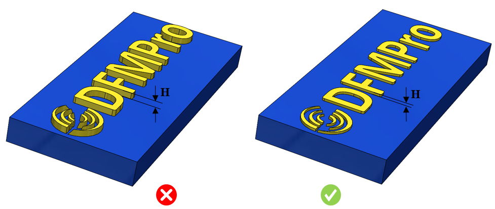

このルールは、指定された値に従って推奨テキスト高さをチェックします。
テキスト文字はプラスチック部品における小さな形状で、追加情報を伝えるために使用されます。
例：
文字（レタリング）
識別マーク
重要な指示、警告
法的および規制情報
会社ロゴ、記号
テキスト文字はプラスチック部品の小さな形状であり、部品に凹ませる（＝金型側に切削加工が必要になる）よりも、部品表面から盛り上げて配置した方が見栄えが良くなります。部品上の凸文字は読みやすく、アクセスもしやすい一方、金型側で凹文字にすると研磨が容易になります。これに対し、金型側で凸文字にすると良好な仕上げを得るのが難しくなります。一般的なガイドラインでは、最小テキスト高さは 0.2 mm（0.01”）未満にすべきではないとされています。場合によっては、高さや深さを大きくすると部品コストの不要な増加につながることがあるため、適切な高さを維持する必要があります。
最小テキスト高さは 0.2 mm（0.01”）未満にしないでください。
DFMPro ではデフォルトのテキスト高さをチェックできます。ただし、ユーザーは「range」演算子を構成して、最小および最大テキスト高さ条件をチェックできます。

ここでは、
H = テキスト高さ